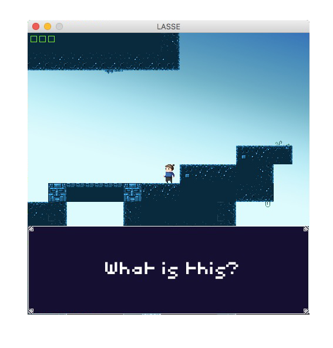

Projects I care about
18 / April

An unreleased Java game with full functionality made without the aid of game developing software.
Projects can be found on github.
An unreleased Java game with full functionality made without the aid of game developing software.
Projects can be found on github.